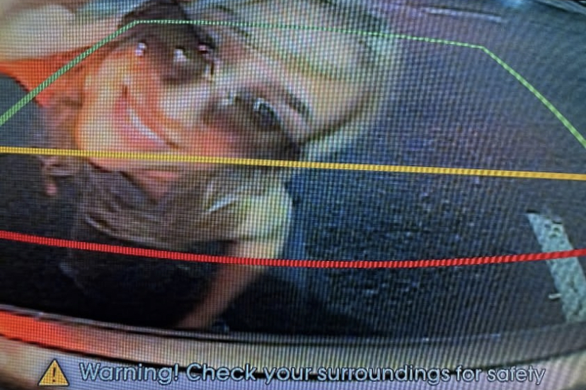

My overall style in art can be categorized as whimsical. My personal favorite medium to work with is vine charcoal. I also really love animation and video editing. This year I really got into sketching and painting and would love to implement that into my digital work.

Welcome!
Hello! Welcome to my About Me site, as mentioned previously I am a sophomore studying creative technology. I have a background in 3D art and 2D art along with a variety of expierences with Adobe Animate, After Effects etc.

I am from a town called Glen Ellyn which is about 1.5 hours north of Normal IL and around 40 mminutes outside of Chicago. I like making random passion projects whenever I can and I love a good hot dog!